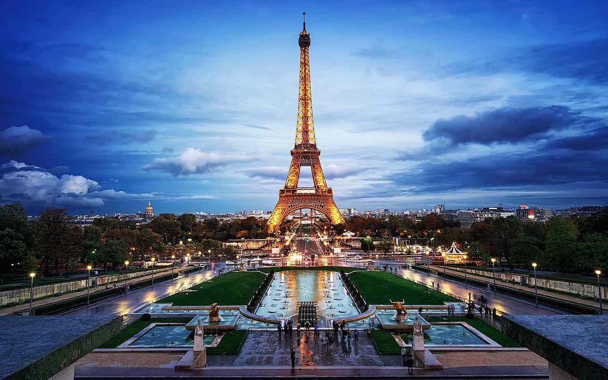

Destination Guide
Paris
A two-hour lunch, a world-class museum, and a floodlit iron tower — all before dinner, all within walking distance of each other.
Best Time to Go
Apr–Jun & Sep–Oct
Fly Into
Paris–CDG or Orly (ORY)
Currency
Euro (EUR)
Suggested Stay
4–6 days
Plan This Trip
Search flights and hotels for Paris right here — no extra tabs.
Prefer another search engine? Kiwi.com →
Why go
Most first trips fall into a rhythm without much effort: mornings at a landmark, afternoons drifting between neighborhoods, evenings that run long over dinner. The big three — the Eiffel Tower, the Louvre, Notre-Dame — earn the hype, but Paris rewards slowing down just as much: a bakery you return to twice, a bench in the Luxembourg Gardens, a bridge you cross for no reason other than the view. The city is compact and the Métro is fast, so you spend your time seeing things, not getting to them. Four days gives you the icons; six lets you add Versailles and actually sit down for lunch.
Where to Stay
Where you sleep sets the tone — palace-hotel glamour near the Champs-Élysées, quiet elegance by the Louvre, or a modern base in the business district with an easy ride into the centre.

Le Royal Monceau Raffles Paris
A palace hotel two minutes' walk from the Arc de Triomphe — Philippe Starck interiors, a private cinema, and one of the city's best hotel spas.

Pullman Paris Tour Eiffel
Wake up across the street from the Eiffel Tower. Book a high floor on the tower side and you won't need to leave your room for the view.

Grand Hôtel du Palais Royal
Quiet, boutique, and steps from the Louvre and the arcaded gardens of the Palais-Royal — a good base for museum-heavy days.

Hilton Paris La Défense
A modern, better-value base in the business district — direct RER A into the centre in about 15 minutes, with the CNIT complex right next door.
Icons & Neighborhoods
Paris's landmarks are spread across a handful of walkable districts — pick a cluster a day rather than criss-crossing the city.

Arc de Triomphe
Climb it for a rooftop view straight down the Champs-Élysées, or just admire it from the traffic circle below.

The Louvre
The world's largest art museum. Book timed entry in advance and pick two or three wings rather than trying to see it all.

Notre-Dame
Reopened after its post-fire restoration, and looking better than ever inside. Free entry, but book a slot ahead in high season.

Montmartre & Sacré-Cœur
The city's highest hill — cobbled streets, artists' squares, and a basilica with a view over every rooftop in Paris.

Musée d'Orsay
A former railway station turned Impressionist museum — Monet, Degas and Van Gogh under a soaring glass roof.

Palais Garnier
You don't need a ticket to a performance — day tours take you through the gilded auditorium and the marble grand staircase.

Jardin du Luxembourg
The Left Bank's favourite park — sit by the fountain, rent a toy sailboat, or just find shade on a warm afternoon.

Le Marais
Narrow medieval streets, concept stores, falafel on Rue des Rosiers, and the arcaded elegance of Place des Vosges.

Galeries Lafayette
A department store worth visiting for the building alone — take the lift straight to the free rooftop terrace.

The Élysée Palace, the official residence of the President of France, isn't open to casual visitors — but the gates on Rue du Faubourg Saint-Honoré are worth a look on your way to the shops nearby.
Food & Dining
From rooftop tables with a floodlit tower view to an unfussy neighborhood bistro — book ahead for anything with a view.

L'Oiseau Blanc
A glass-roofed rooftop restaurant with what might be the single best Eiffel Tower view in the city. Book the tower-facing tables well ahead.

La Tour d'Argent
A Paris institution since the 16th century, with a dining room looking straight across the Seine to Notre-Dame.

Francette
A relaxed, no-reservation-needed bistro for the nights you just want good wine and a proper plate of food.
Beyond the City: Day Trips
If you have an extra day or two, everything below is under an hour from central Paris by train.

Château de Versailles
The Hall of Mirrors and the palace gardens are a full day on their own. About 40 minutes from central Paris on the RER C.

Basilique Saint-Denis
The burial site of nearly every French king and queen, and the birthplace of Gothic architecture — a short Métro ride north of the city, far fewer crowds than Notre-Dame.

Disneyland Paris
Two parks and its own train station, about 40 minutes from the centre on the RER A — an easy full-day trip with kids.

Parc Astérix
A France-themed alternative to Disney, built around the Astérix comics, with some of Europe's best roller coasters.
Getting There
Air France
France's national carrier flies into Paris–Charles de Gaulle (CDG) from a huge network of cities worldwide, with CDG's Terminal 2E among the most striking in Europe. Budget and short-haul flights are more likely to land at Orly (ORY), closer to the city centre but with fewer long-haul connections.

A Simple 5-Day Route
Days 1–2
Right Bank & Icons
Eiffel Tower, Arc de Triomphe, a walk down the Champs-Élysées, and an evening Seine cruise.
Day 3
Louvre & the Marais
Morning at the Louvre, lunch near the Palais-Royal, evening wandering Le Marais and Place des Vosges.
Day 4
Montmartre & the Left Bank
Sacré-Cœur and the artists' squares in the morning, Musée d'Orsay and the Jardin du Luxembourg in the afternoon.
Day 5
Versailles
A full day trip to the palace and gardens, back in the city in time for dinner.
Good to Know
Getting around
The Métro covers the whole city and trains run every few minutes. A carnet of tickets or a Navigo Easy card will get you almost everywhere faster than a taxi.
Entry requirements
France is part of the Schengen Area. Many visitors can enter visa-free for short stays — check current requirements for your nationality before you book.
Packing
Comfortable walking shoes, a light layer for cool evenings even in summer, and something smart-casual for dinner — Parisians dress a notch up.

Start Planning Your Paris Trip
Compare flights to Paris, and browse hotels near the icons, in one place.